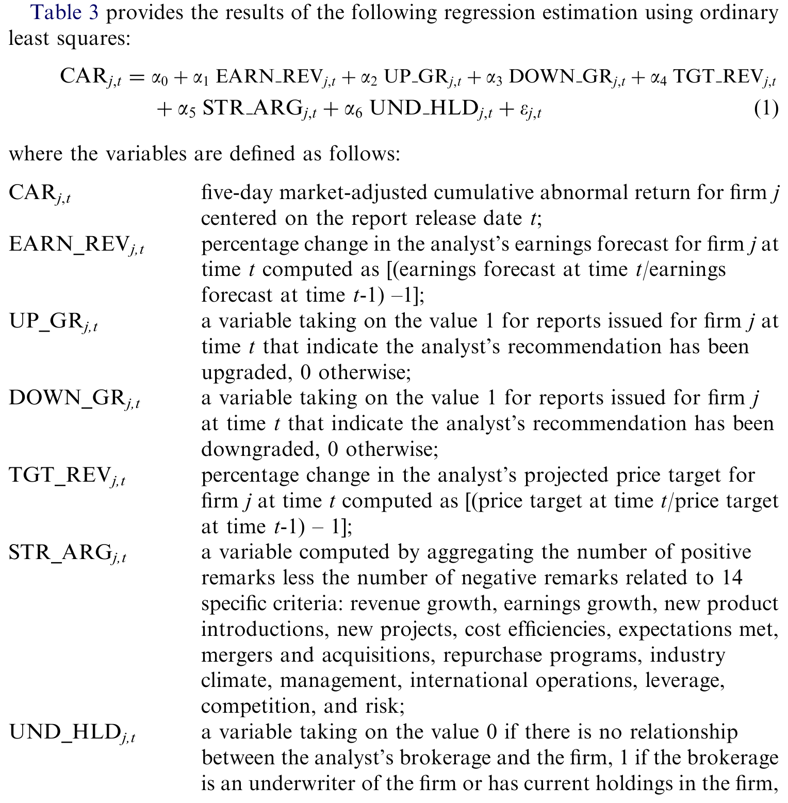
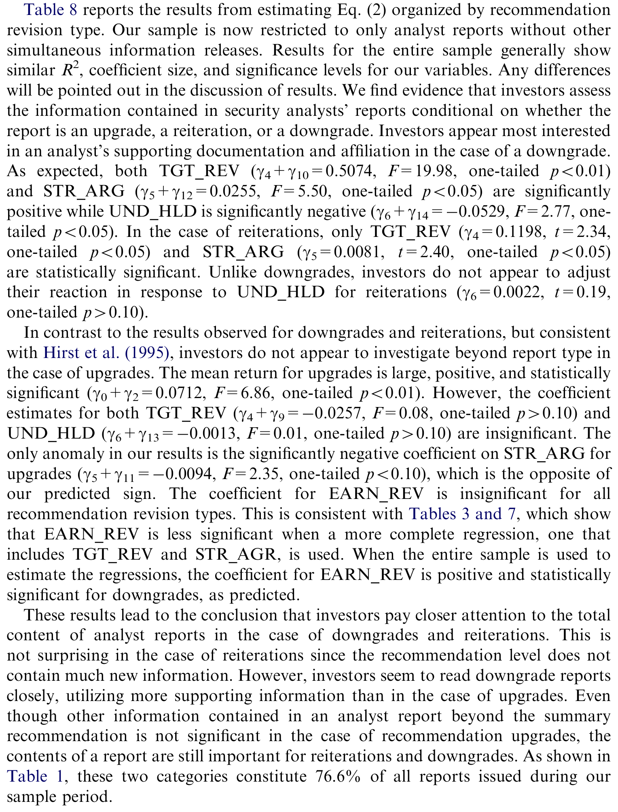
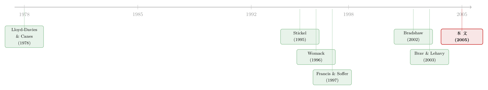

拆开一份研报：当「分析师写了什么」终于被一字一句地数清楚
本文读的是 Asquith, Mikhail & Au (2005, Journal of Financial Economics)：作者把 1,126 份顶级分析师的研报【逐字】编码，第一次完整地把研报拆成盈利预测、推荐评级、目标价、以及一大堆「论据」。结论是——目标价的信息量被以往研究严重低估；而一旦把分析师写下的论据强度也放进回归，盈利预测和评级修正的显著性就被「吃掉」了一大半，甚至完全消失。最有看头的是下调（downgrade）报告，而占样本近三分之二的「维持」（reiteration）报告里，真正起作用的只剩目标价和论据强度。他们的调整后 R² 接近 26%，是只用摘要指标的旧研究的三四倍。
1 一个被我们忽略了二十年的问题
先讲一个很多人没意识到的事实。
过去二十年，研究分析师（security analyst）的文献汗牛充栋，但它们几乎都在反复研究同一样东西：研报里的【两个数字】——盈利预测（earnings forecast）的修正，和股票推荐（recommendation）的变化。买入、卖出、持有，升一级、降一级，市场涨多少、跌多少。Womack (1996)、Stickel (1995)、Francis and Soffer (1997)……一篇接一篇，做的都是这件事。
可问题是，如果你真的拿起一份华尔街的研报，会发现那两个数字只是封面上的一行字。后面跟着的，是十几页密密麻麻的分析：营收会不会增长、成本能不能压下来、新产品卖得好不好、管理层换人是利好还是利空、行业景气往哪边走……分析师真正花力气的地方，恰恰是这些「数字背后的话」。
本文作者借了《商业周刊》的一句话来点题，我觉得极其传神：
「说到底，股票评级和目标价不过是分析师研究的皮和骨。真正的肉，藏在分析、细节和语气里。」（"In the end, stock ratings and target prices are just the skin and bones of analysts' research. The meat of such reports is in the analysis, detail, and tone." —— BusinessWeek Online, 2002）
于是一个很自然、却一直没人认真回答的问题浮出水面：如果我们把「肉」也量出来，它到底有没有信息含量？放进回归之后，那两个被研究烂了的「数字」，还重不重要？
这正是 Asquith、Mikhail 和 Au 这篇 2005 年发在 JFE 上的论文要干的事。而要回答它，作者付出的代价是——把每一份研报，从头到尾，用手读完，再用手编码。
2 一份「手工活」造出来的数据
这篇文章最硬核、也最让人肃然起敬的地方，在它的数据。
现成的数据库（如 I/B/E/S、Zacks）只汇总两样东西：盈利预测和推荐评级。没有任何数据库会告诉你研报里写了什么论据、用了什么估值方法、目标价是多少。要拿到这些，唯一的办法就是——把研报一份份读下来，手工编码。
作者最终的样本是 1,126 份完整研报，来自 56 位卖方分析师、11 家投行、覆盖 46 个行业，时间跨度是 1997–1999。每一份报告都被通读一遍，按 30 个数据字段逐项编码。
为什么是这 56 位？因为作者刻意只挑了《机构投资者》（Institutional Investor）评出的「全美研究团队」（All-American Research Team）成员——也就是被同行公认的顶级分析师。这样做有两个好处：一是 Stickel (1992, 1995) 早就证明这些明星分析师的预测更准、市场反应更强；二是把分析师「质量」这个维度先固定住，省得它来搅局。
不过样本的代价也很诚实地摆在了台面上。Investext 数据库远没有 Zacks 全：在 Zacks 列出的报告里，Investext 能找到的比例在 1997、1998、1999 三年分别只有 13.1%、12.4%、50.3%。更要命的是，像高盛（Goldman Sachs）这种不向 Investext 提供报告的投行，旗下分析师整个被排除了。这意味着样本天然偏向「愿意把研报公开」的机构——这个潜在偏差，作者自己也写明了。
最终这 1,126 份报告里，有 262 份上调、739 份维持、125 份下调。请记住这个结构：维持评级的报告占了 65.5%，将近三分之二。这个比例后面会变成全文的一个关键转折。

Table 3: provides the results of the following regression estimation using ordinary
还有一个容易被忽略、却很要命的细节：研报的「公告日」到底是哪一天？ 公司往往在研报正式发布之前，就已经把里面的关键信息放了出去。结果是数据库给的日期常常和报告上印的日期对不上。在这个样本里，只有 58.6% 的报告日期和真正的公告日完全吻合，剩下 41.4% 是作者一份份手工校对出来的。事件研究里，事件日错一天，结论就可能错一截——这种笨功夫，恰恰是这篇文章可信度的地基。
3 识别策略：把研报拆成四块，逐块称重
方法本身不复杂，是一个标准的事件研究（event study）回归。被解释变量是 CAR——以研报发布日为中心的【五日】市场调整累计异常收益（five-day market-adjusted cumulative abnormal return）。
真正的巧思在解释变量。作者把一份研报拆成了四块，分别量化：
$$ CAR_{j,t} = \alpha + \beta_1\, EARN\_REV_{j,t} + \beta_2\, TGT\_REV_{j,t} + \beta_3\, STR\_ARG_{j,t} + \beta_4\, UND\_HLD_{j,t} + \varepsilon_{j,t} $$
这四个变量的定义，全部来自他们手工编码的字段（见 Table 1 的注释）：
请把目光停在 STR_ARG 上——这是整篇文章的「肉」。作者把研报里关于 14 个维度的所有表述都数了一遍：营收增长、盈利增长、新产品、新项目、成本效率、是否达到预期、并购、回购、行业景气、管理层、国际业务、杠杆、竞争、风险。每出现一句正面表述记 +1，负面记 −1，加总得到一个净值。一份研报论据越「偏多头」，STR_ARG 越大。
这是一个非常聪明的设计。为什么要这么费劲？ 因为推荐评级有个先天缺陷：尽管理论上有强买、买、持有、卖、强卖五档，但分析师极少用那两个负面评级（Barber et al., 2001; Mikhail et al., 2004）。一个几乎只在三档里跳的离散变量，信息量被严重压缩了。而 STR_ARG 和 TGT_REV 都是连续的、有梯度的，正好补上了这个洞。
识别上还有一个干净的处理。作者担心：市场反应可能根本不是研报带来的，而是当天恰好有别的消息（财报、分红、拆股、并购、评级变动……）。于是他们逐份标注了是否存在同期信息发布（contemporaneous information release）。结果发现，大约一半的研报是和其他消息同时出现的（样本里「没有其他公告」的比例是 47.03%）。这一刀切下去，就能把样本劈成「干净子样本」和「有同期消息子样本」分别回归——后面会看到，这一劈劈出了全文最漂亮的一个结论。
4 主要结果：目标价被低估了，而「数字」被论据稀释了
现在到了揭晓答案的时候。结论可以拆成层层递进的三步。
第一步，三个摘要指标各自独立有用。 盈利预测修正、推荐评级、目标价修正，单独放进去都能带来独立的信息——这一步只是复刻了前人。
第二步，也是第一个反转：目标价的贡献被大大低估了。 一旦把目标价修正 TGT_REV 加进回归，模型的拟合度【急剧】上升，远超只用盈利预测和离散评级时的水平。这呼应了同期 Brav and Lehavy (2003) 的发现，但作者走得更远。
第三步，真正的杀招：把「论据强度」放进去。 这是全文的核心结论——
当 STR_ARG（论据强度）被纳入回归后，市场对目标价变化的反应依然强烈而显著；但盈利预测修正和推荐评级修正的显著性被削弱了，在某些模型里甚至被完全消除。
换句话说，过去二十年文献奉为圭臬的那两个「数字」，很大一部分解释力其实是「论据」的影子。当你把分析师真正写下的那些话量化进来，那两个数字就显得没那么重要了。论据越强，市场反应越强；这个结论对总的强度指标稳健，对拆开的正面/负面论据、以及十几个细分论据也都成立。
而这一切的回报，是一个让旧文献相形见绌的拟合度。作者的调整后 R² 接近 26%。作为对比：
- Stickel (1995)：买入回归
R² = 1%，卖出回归R² = 2%； - Francis and Soffer (1997)：横截面模型
R² = 5%； - Brav and Lehavy (2003)：加了目标价后约
8%。
26% 对 5%，三到四倍。作者一句话点破了这背后的含义：旧研究之所以 R² 低得可怜，是因为「拼图里重要的几块一直缺着」（important pieces of the puzzle are missing）。这一篇，把缺的那几块补上了。
5 转折：研报是「报新闻」，还是「解读新闻」？
到这里，一个更深的问题浮上来了：分析师到底是在提供新信息，还是只是把别人已经发布的消息【再说一遍】？
作者用前面那把「同期消息」的刀，给出了一个我很喜欢的回答。
把样本分成两半：
- 在没有同期消息的「干净子样本」上重跑回归，所有结论【定性上完全不变】——说明研报本身确实带来了新的、独立的信息，不是在拾人牙慧；
- 但在有同期消息的子样本上，结果变了：唯一还显著的系数，只剩下论据强度
STR_ARG和目标价修正TGT_REV。
这个对比极其有解释力。它说明：当公司自己已经放出消息时，分析师的角色就从「报信者」切换成了「解读者」——他不再提供原始事实，而是替市场把那条消息翻译成「这对股价意味着什么」。论据强度和目标价，恰恰是这种「解读」的载体。
这其实和近年「价格反过来教分析师」的研究遥相呼应。市场信息与分析师判断之间，并不是单向的喂养关系（关于反方向的有趣证据，可参见《价格会「教」分析师做预测吗？》）。
6 最关键的一步：把报告按「升 / 维持 / 降」分开看
如果说前面的结论是「精彩」，那这一节就是全文的【灵魂】。
作者追问：市场会不会因报告类型不同而区别对待？于是把样本按上调、维持、下调拆开，重新估计（即 Table 8 的 Eq. (2)）。结果出人意料地干净利落：
下调报告受到的审视最严。 在下调样本里，目标价变化和论据强度都显著为正、且与市场反应正相关。更有意思的是利益关系变量 UND_HLD 在这里显著为负——也就是说，当出报告的投行和公司有承销/持股关系时，市场对坏消息的反应反而被放大了。直觉很顺：一个本该「护着」公司的投行都开口唱衰了，那这坏消息的可信度就更高。市场在「给坏消息加码」。这与 Michaely and Womack (1999)、Hirst et al. (1995) 关于「缺乏独立性」的发现一脉相承。
维持报告里，只剩两样东西管用。 还记得维持评级占了样本近三分之二吗？在这个最大、却被几乎所有旧文献直接扔掉的子样本里，唯一显著的，只有目标价变化和论据强度。这恰恰是本文方法论的胜利：旧研究只盯着「评级有没有变」，而维持报告按定义评级没变，于是它们整片地落在了显微镜之外。可一旦你去读「肉」，会发现维持报告里照样有大量信息在流动。
上调报告里，没有任何变量按预期方向显著。 信息，对上调而言，反而是最不重要的。

Table 8: reportsthe results from estimating Eq. (2) organized by recommendation
把三类放在一起，本文的标志性论断就立住了：研报的信息含量，对下调最重要，对上调最不重要；而对占大头的维持报告，真正起作用的只有目标价和论据强度。 Table 1 Panel C 的描述统计也给出了一致的画面：下调报告的平均 CAR 是 −6.6%，上调是 +4.5%，维持几乎是 0.0%；论据强度 STR_ARG 的均值，上调 2.8、维持 1.7、下调 −0.2——语气和方向，写在数字里。
7 顺带的两个发现：目标价准不准，估值方法重不重要
文章最后还顺手解决了两个独立的小问题，结论都挺反常识。
关于目标价的准确度。 作者把「准确」定义为：研报发布后的一年内，股价在任意时点达到或超过了 12 个月目标价。按这个口径，约 54% 的目标价被实现或超越；剩下 46% 没达到的，平均也走完了目标价的 84%。而且分析师越乐观（预期涨幅越大），实现目标的概率反而越低——一种很朴素的「均值回归」式的过度乐观。
关于估值方法。 这个发现最有意思：估值方法和分析师的准确度、市场反应之间，毫无相关性。 而且，绝大多数分析师用的是最简单的盈利乘数（earnings multiple）模型；只有少数会用净现值或财务教科书和 MBA 课程里推崇的各种贴现现金流（DCF）方法。Table 1 显示，用盈利乘数的比例高达 99.1%，用 DCF 各类变体的只有 12.8%。换句话说，市场并不会因为你用了更「高级」的估值模型就更买账——这对所有迷信 DCF 的人，是一记温柔的耳光。
8 文献脉络
把这篇文章放回它所在的那条河流里，脉络其实很清晰。
最早的一支，研究的是「二手信息」也能动价格：Lloyd-Davies and Canes (1978) 借《华尔街日报》的「Heard on the Street」专栏，发现新买入（卖出）推荐的事件日收益是 0.93%（−2.37%）。随后 Abdel-khalik and Ajinkya (1982)、Lys and Sohn (1990)、Stickel (1991) 等沿着盈利预测修正这条线，确认了它的信息含量。
接着，研究重心转向推荐评级。Womack (1996) 用 First Call 数据直接检验：被加入（移出）强买名单的股票，三日规模调整收益为 2.98%（−1.94%）；被加入强卖名单的则是 −4.69%。
然后，一个自然的问题是：盈利预测和评级，哪个更有信息量、能不能互相替代？Francis and Soffer (1997) 发现两者都不能完全包含对方的信息；Stickel (1995) 则在控制了分析师声誉、券商规模等一大堆因素后，把横截面模型做得更细——但他们的 R² 都低得可疑（1%–5%）。

再然后，目标价进入视野。Bradshaw (2002) 注意到目标价更常出现在乐观的报告里；Brav and Lehavy (2003) 把目标价加进 Francis–Soffer 的框架，R² 升到约 8%。
但真正关键的一步，是 Previts et al. (1994) 和 Hirst et al. (1995) 把目光投向了研报的「文字内容」——前者用词频软件分析术语却没做统计，后者用实验室方法发现：当报告是坏消息时，论据强度会影响投资者判断。本文正是站在这两条线的交汇处：它【既】用大样本真实研报、【又】把文字论据量化、【还】把目标价、关系、报告类型一并纳入，于是补上了前人缺的那几块拼图。这也是它能把 R² 一举抬到 26% 的原因。
9 评论与延伸（Q&A + 研究方向）
(a) 几个可能的疑问
Q：STR_ARG（论据强度）是研究者手工数出来的，会不会带进编码者的主观偏差？
这是本文最该被追问的地方。它确实是人工编码——14 类论据、正负计数，难免有主观判断和测量误差。好在三点缓解了担忧：一是它对总指标、拆开的正负论据、以及十几个细分论据都稳健，不像是单一编码规则的偶然产物；二是测量误差通常会让系数偏向 0，所以「论据显著」更可能是被低估而非高估；三是把它纳入后
R²跳到26%，很难用噪声来解释。当然，今天我们大概会用 NLP / 大模型重做一遍，看看机器读出的语气是否复现这个结论。
Q：用《机构投资者》全美明星分析师做样本，结论还能推广到普通分析师吗？
不能直接推广，作者也没声称能。明星分析师预测更准、市场反应更强（Stickel, 1992, 1995），所以这里测到的是「信息含量的上限」。对普通分析师，论据强度的边际贡献可能更小。这是外部有效性的一个真实限制。
Q：把盈利预测和评级的显著性「吃掉」，会不会只是多重共线性的把戏？
有这个嫌疑——
STR_ARG、TGT_REV和盈利/评级本来就相关。但作者的论证不是「系数变小」这一句话，而是配合了拟合度大幅提升、分类型样本的差异化结果、以及对干净子样本的复现。如果纯是共线性，不该出现「下调里UND_HLD显著为负、维持里只剩目标价和论据」这种结构化的模式。
Q：为什么用 5 日窗口而不是 3 日（像 Womack 那样）？窗口选择会不会驱动结论？
5 日窗口是为了容纳「公告日不确定」的问题——有 41.4% 的报告日期和真实公告日对不上，窗口太窄容易把事件切在窗外。代价是窗口越宽、越容易混入其他噪声，所以作者才额外做了「同期消息」的子样本切分来对冲。这是一个合理的权衡，但稳健性上确实值得看看不同窗口。
Q：「目标价 54% 被实现」听起来很高，是不是定义太宽松了？
是的，要小心。这里的「准确」是一年内任意时点触及目标价，而不是「一年后落在目标价」。在波动的市场里，只要给足 12 个月，股价触到某个上方价位的概率本就不低。所以这个 54% 更像是「目标价方向感」的证据，而非「点估计精度」的证据——它和 Bradshaw and Brown (2002) 的口径要分开看。
Q：估值方法和准确度「零相关」，是不是说 DCF 这些方法没用？
不能这么读。它说的是「分析师选用哪种方法，预测不到他准不准、也预测不到市场反应」。这更可能反映：方法的选择是内生的、且大家最后锚定的还是同一批基本面信息；用花哨模型的人未必有信息优势。它不是在否定 DCF 的理论价值，而是在说市场不为「方法的包装」付费。
(b) 几个可能的研究问题与提案
1. 用大模型重做「论据强度」，并扩展到债券研报。
【经济故事】本文的
STR_ARG是 2005 年的手工活；今天可以用 LLM 把语气、论据方向、确定性程度一次性从全文里抽出来，检验「论据信息含量」在更大样本、更长时间上的稳健性，甚至区分「事实陈述」与「主观判断」的不同定价。 【可行性】高。卖方股票研报可从Refinitiv/Bloomberg/AlphaSense获取，方法成熟。难点在构造可信的基准来验证机器读出的语气，与本文的人工编码做对照校准。
2. 信用研报里，「论据」对债券利差的信息含量。
【经济故事】本文发现「下调」最受重视、且独立投行的坏消息被放大。债券是非对称的求偿权，天然对下行更敏感。一个自然的猜想是：信用/债券分析师报告里的负面论据，对利差的冲击应当显著大于正面论据，且这种不对称比股票更强。 【可行性】中。债券研报覆盖比股票稀疏，且二级市场成交不连续，事件日 CAR 难算——需要
TRACE配合干净的成交价。识别上可借鉴本文的「同期消息」切分。流动性低会放大测量误差，是主要障碍。
3. 外资持有人占比，是否改变研报的信息含量？
【经济故事】不同投资者「读研报」的能力和依赖度不同。如果外资是更专业、更依赖卖方研究的群体，那么外资持股高的股票，其研报（尤其是论据部分）引发的市场反应应当更强、price discovery 更快。 【可行性】中。需要分国别/分类型的持股数据（如
FactSet/Thomson 13F外资标识）匹配研报样本。识别上可用指数纳入等准自然实验制造外资持股的外生变动。难点是研报样本与持股数据的匹配粒度。
4. 「公告日 vs. 报告日」的 41.4% 错位本身，是不是一条信息泄漏的暗线？
【经济故事】既然四成报告的关键信息在正式发布前就「漏」了出去，那这段时间差里发生了什么交易？谁在提前布局？这与研报「通风报信」的文献直接相关（参见《报告还没发，他们已经先买了五天——研报里那条「通风报信」的暗线》）。 【可行性】高。把报告日与真实公告日的差，对齐到机构/经纪商成交数据，检验差期内的异常成交与方向。数据可得性是主要约束，但识别逻辑干净。
5. 维持报告的「沉默信息」与长期收益。
【经济故事】本文证明占三分之二的维持报告里仍有信息（目标价+论据）。一个延伸是：当维持评级、但论据强度悄悄转弱（
STR_ARG下降）时，是否预示着未来的下调与负向漂移？这相当于在「评级不变」的表象下捕捉分析师的真实信念变化。 【可行性】高。只需在面板里构造STR_ARG的时序变化，做预测性回归。与「分析师私有/公开信息权重」的文献天然衔接（参见《分析师到底该信「自己」几分？》）。
10 我的判断
先说贡献。这篇文章最值钱的不是某个系数，而是它逼着整个领域承认一件事：我们过去测量的「分析师信息」，只是封面那两行字。 当作者用最笨的办法——一份份读、一句句数——把研报的「肉」量化出来，旧文献奉若神明的盈利预测和评级修正，显著性就塌了一半。26% 对 5% 的 R² 落差，是对「只用摘要指标」这一整套研究范式的有力质疑。「下调最受重视、维持里只剩目标价和论据、有同期消息时分析师转为解读者」这三个分层结论，至今读来都很扎实。
再说对识别的担忧。最大的软肋是 STR_ARG 的人工编码——主观性和测量误差无法回避，尽管多重稳健性和「误差偏向 0」的逻辑帮它挡了一些。其次是样本的选择性：只有顶级分析师、只有愿意公开研报的投行、Investext 覆盖率在早年低到 13%，这些都让外部有效性打了折扣。第三，回归是关联而非因果——「论据强→反应强」里，论据强度和市场未观测到的基本面冲击可能同源，作者的「干净子样本」切分缓解了一部分，但没有彻底关掉这条暗门。
最后说后续想看到什么。我最想看的，是用今天的 NLP/LLM 把这套「论据强度」自动化重做一遍：一来检验 2005 年的手工结论在二十年、上万份报告上还成不成立；二来把「事实陈述」和「主观语气」分开定价；三来推到信用与债券市场，看看那个「下调最受重视」的不对称，在天然偏向下行的债权求偿权里会不会更尖锐。如果那个不对称在债市被放大，这篇 2005 年的股票研究，就会变成理解信用市场信息传导的一块意外的基石。
参考文献
Abdel-khalik, A., Ajinkya, B. (1982). Returns to informational advantages: the case of analysts' forecast revisions. The Accounting Review 57, 661–680.
Barber, B., Lehavy, R., McNichols, M., Trueman, B. (2001). Can investors profit from the prophets? Security analyst recommendations and stock returns. The Journal of Finance 56, 531–563.
Bradshaw, M. (2002). The use of target prices to justify sell-side analysts' stock recommendations. Accounting Horizons 16(1), 27–41.
Bradshaw, M., Brown, L. (2002). An examination of sell-side analysts' abilities to predict target prices. Unpublished working paper, Harvard University.
Brav, A., Lehavy, R. (2003). An empirical analysis of analysts' target prices: short-term informativeness and long-term dynamics. Journal of Finance 58, 1933–1967.
Francis, J., Soffer, L. (1997). The relative informativeness of analysts' stock recommendations and earnings forecast revisions. Journal of Accounting Research 35(2), 193–211.
Hirst, E., Koonce, L., Simko, P. (1995). Investor reactions to financial analysts' research reports. Journal of Accounting Research 33(2), 335–351.
Lloyd-Davies, P., Canes, M. (1978). Stock prices and the publication of second-hand information. Journal of Business 51, 43–56.
Lys, T., Sohn, S. (1990). The association between revisions of financial analysts' earnings forecasts and security price changes. Journal of Accounting and Economics 13, 341–363.
Michaely, R., Womack, K. (1999). Conflict of interest and the credibility of underwriter analyst recommendations. The Review of Financial Studies 12, 653–686.
Mikhail, M., Walther, B., Willis, R. (2004). Do security analysts exhibit persistent differences in stock picking ability? Journal of Financial Economics, in press.
Previts, G., Bricker, R., Robinson, T., Young, J. (1994). A content analysis of sell-side financial analyst company reports. Accounting Horizons 8(2), 55–70.
Stickel, S. (1992). Reputation and performance among security analysts. The Journal of Finance 47, 1811–1836.
Stickel, S. (1995). The anatomy of the performance of buy and sell recommendations. Financial Analysts Journal 51, 25–39.
Womack, K. (1996). Do brokerage analysts' recommendations have investment value? The Journal of Finance 51, 137–168.